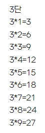

01. 데이터 이펙트 : 1부터 100까지 출력하기
for문을 이용해서 1부터 100까지 출력하는 예제입니다
for( let i=1; i<=100; i++){
console.log(i) //반복문 for문
}
//1, 2, 3, 4, ~~ 100
02. 데이터 이펙트 : 1부터 50까지 출력하기
for문을 이용해서 0부터 50까지 출력하는 예제입니다
for( let i=0; i<=50; i++ ){
console.log(i) //초기값을 0으로 설정하고 1씩 증가
}
//1, 2, 3, 4, ~~ 50
03. 데이터 이펙트 : 1부터 100까지 짝수만 출력하기
for문을 이용해서 0부터 100까지 짝수만 출력하는 예제입니다.
for( let i=0; i<=100; i+=2){
console.log(i) //i+=2 : i = i + 2
}
//2, 4, 6, 8, ~~ 100
04. 데이터 이펙트 : 1부터 100까지 5의 배수 출력하기
for문과 if문을 이용해서 0부터 100까지 5의 배수만 출력하는 예제입니다
for( let i=0; i<=100; i+=5){
console.log(i) //i+=5 : i = i + 5
}
//5, 10, 15, 20, ~~ 100
for( let i = 1 ; i<=100; i++){
if(i % 5 == 0){ // i를 5로 나누었을 때 나머지가 0인 것
console.log(i)
}
}
//5, 10, 15, 10, ~~ 100
05. 데이터 이펙트 : 1부터 100까지 짝수(파란색) 홀수(빨간색) 출력하기
for문과 if문을 조합하여 1부터 100까지 짝수와 홀수에 색을 넣어 출력하는 예제입니다
반복문과 조건문을 같이 쓴 형태입니다
for(let i=1; i<=100; i++){
if(i % 2 == 0){
document.write("<span style='color:blue'>"+i+"</span>")
}
if(i % 2 == 1){
document.write("<span style='color:red'>"+i+"</span>")
}
}
//1,2,3,4,5 ~~ 100
06. 데이터 이펙트 : for문 이용해서 100칸 테이블 만들기
for문을 이용하여 테이블을 만드는 예제입니다
let table = "<table border='1'>";
for(let i=1; i<=100; i++){
table += "<tr>";
for(let j=1; j<=100; j++){
table += "<td>"+j+"</td>"
}
table += "i</tr>";
}
table += "</table>";
document.write(table);
//
07. 데이터 이펙트 : 중첩 for문 이용해서 구구단 만들기
for문을 중첩 이용 하여 구구단을 만드는 예제입니다
for(i=1; i<10; i++){
document.write(i+"단","<br>");
for(j=1; j<10; j++){
document.write(i+'*'+j+'='+i*j,'i<br>');
}
document.write("<br><br>")
}
결과확인하기

..........................................